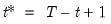

@cumbmin Cumulative Statistics Backward cumulative minimum of a series. Decreasing samples calculation of the minimum. Syntax: @cumbmin(x, [s]) x: series s: (optional) sample string or object Return: series The backward maximum as the minimum value from the current observation to the end of the sample, so that: where the order statistics represent data for the  observations (), ordered from low to high, and is the last period. This function is panel aware. Examples show @cumbmin(x) generates a linked series of the backward cumulative minimum of the series x. Cross-references See also @cumbmax. For the forward variant of this function, see @cummin.


 is the last period.
is the last period.